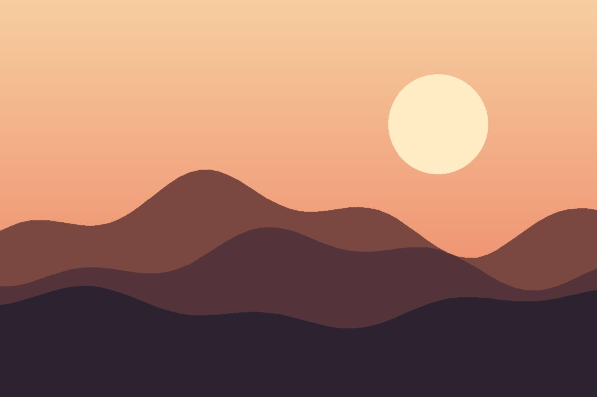
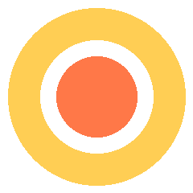

Ridge & river loop
A steady climb to the ridge, then down along the river to the old mill.
Walks worth the early alarm
Hand-checked routes, honest timings and the café at the end. Every walk is tested on foot in all four seasons.

Three walks we keep coming back to, with the hills, the hours and the honest truth about the mud.
A steady climb to the ridge, then down along the river to the old mill.
Cliff paths and two sheltered coves. Best before the tide turns.
Flat, shaded and good in the rain, with a tea hut at the halfway gate.

“The best map is the one with a pencil note that says: the view is better from the second bench.” — Ines, walking since 1994